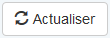
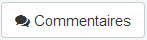
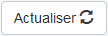

WidgetButton¶
Fonction¶
Hérite de WidgetBase
Ce composant est utilisé pour représenter un bouton à l’écran, plusieurs comportements (actions) sont nativement supporté(e)s (exit, save ...).
Note
En utilisant l’action exit avec le noeud <redirection> adéquat ce composant peut effectuer des redirections vers des frames spécifiques.
Ce composant intègre deux templates de rendu :
- Template utilisé en l’absence d’option
glyphiconoufa(pour FontAwesome) : <input type="button" onclick="return false;" id="{idUnique}" class="btn btn-default" value="{sLabel}" />
- Template utilisé en l’absence d’option
- Template utilisé si l’option
glyphiconoufaest présente : <button type="button" id="{idUnique}" class="btn btn-default"> <span class="{sIconType} {sIconClass}"></span> {sValue} </button>
- Template utilisé si l’option
Note
- Le marqueur
{sIconType}est remplacé parglyphiconsi l’optionglyphiconest présente, il est remplacé parfasi l’optionfaest présente. (Cf. documentation de Glyphicons - How to use ou de FontAwesome - Examples) - Le marqueur
{sIconClass}est remplacé par la valeur de l’option (Ex:glyphicon-starpour Glypiconfa-camera-retropour FontAwesome) - Ces deux options (
glyphiconetfa) étant exclusifs la priorité est donnée à Glyphicon si elle sont toutes les deux présentes.
Hint
- La
classdu bouton (<input>ou<button>) est déduite en combinant la classe ‘btn’ et la valeur de l’attribut class fournie depuis le Xml, en l’absence d’attribut class ‘btn-default’ est utilisée. Il est donc possible d’utiliser d’autre classes de bouton que Bootstrap met à disposition. - Le positionnement de l’icône est à gauche du libellé par défaut, il est possible de la mettre à droite grâce à l’option
glyphicon_aligndécrite ci-après.
Attributs¶
action (Obligatoire)¶
Type : String
Valeurs autorisées : save / exit / refresh_dataset / stand_by / reset
Fonction : Indique quelle action faire lorsque l’utilisateur clique sur le bouton
<button action="save" />
Important
Dans le cas d’un refresh_dataset un paramètre supplémentaire est requis : dataset.
Dans le cas d’un stand_by le noeud enfant <redirection> est requis, plus d’infos : Suspendre la saisie (Stand by)
label (Facultatif)¶
Type : String
Fonction : Le texte à afficher sur le bouton
Par défaut : Prend la valeur de l’attribut “action”, pas vraiment pertinent de le laisser à vide par conséquent.
<button action="save" label="Enregistrer" />
dataset (Facultatif)¶
Type : String
Fonction : le dataset lié aux actions save ou refresh_dataset. Le rôle du dataset varie en fonction de l’action.
Action save : seul le dataset indiqué sera envoyé au serveur pour être sauvegardé (par défaut tous les datasets sont envoyés).
Il est recommandé de faire référence à un dataset qui n’a pas de dépendance.
Action refresh_dataset : le dataset indiqué est mis à jour, pour cette action l’attribut est obligatoire.
Par défaut : undefined
<button action="save" label="Enregistrer le patient" dataset="patient" />
<button action="refresh_dataset" label="Actualiser" dataset="patient" />
Options¶
dlg_title_success¶
Type: string
Fonction: Permet de forcer un Titre pour la fenêtre (dialogBox) qui informe du succès de la sauvegarde
<option output="html" option_name="dlg_title_success" value="Information" />
dlg_msg_success¶
Type: string
Fonction: Permet de forcer un Message pour la fenêtre (dialogBox) qui informe du succès de la sauvegarde
<option output="html" option_name="dlg_msg_success" value="Fiche patient enregistrée en base de données" />
glyphicon¶
Type: string
Fonction: Permet l’utilisation d’une icône glyphicon de Bootstrap dans le bouton, renforçant l’identification de l’action.
<option output="html" option_name="glyphicon" value="glyphicon-refresh" />
Rendu :
fa¶
Type: string
Fonction: Permet l’utilisation d’une icône FontAwesome dans le bouton, renforçant l’identification de l’action.
<option output="html" option_name="fa" value="fa-comments" />
Rendu :
glyphicon_align¶
Type: string
Valeurs autorisées : left ou right
Valeur par défaut : left
Fonction: Indique l’aligment de la glyphicon
<option output="html" option_name="glyphicon_align" value="right" />
Rendu :
Note
Bien que le nom de l’option soit glyphicon_align cette option peut influer également lors de l’utilisation des FontAwesome pour modifier l’alignement de l’icône.
Contenu¶
Le widget Button peut contenir un noeud enfant : <redirection>. Ce noeud permet d’indiquer au noyau un Uri spécifique pour effectuer l’action demandée.
Rappel : Ce noeud est obligatoire si l’attribut action est “stand_by``. La syntaxe de ce noeud n’est pas modifiée
Il devient par conséquent simple de rediriger un utilisateur avec ce code :
<redirection module="form" ctrl="frame" action="get">
<params>
<value alias="id">104</value>
</params>
</redirection>
Un clique sur le bouton lié à cette redirection entrainera un remplacement de la frame courante par la frame récupérer en exécutant un appel XHR vers : form/frame/get/id/104 (Récupération de la ressource id = 104)
Les attributs reconnus du noeud <redirection> sont :
module : (Obligatoire) Le module à utiliser pour construire l’url de redirection
ctrl : (Obligatoire) Le controller à utiliser pour construire l’url de redirection
action : (Obligatoire) L’action à utiliser pour construire l’url de redirection
- type : (Facultatif, par défaut “frame”) Le type de redirection à effectuer :
- frame : La redirection effectuera un remplacement de la frame courante, l’url appelée devra donc retourner un JSON de configuration de formulaire
- window : La redirection sera un redirection “classique” de l’url courante (
document.location.href)
Note
En réalité seule l’égalité type == “frame” est testée, par conséquent toute autre valeur que “frame” sera considérée comme étant équivalente à “window”
Les paramètres (<params>) reconnus sont :
<value>: le contenu de ce noeud sera la valeur transmise- L’attribut
aliascorrespond au nom du paramètre qui sera fournit
- L’attribut
<dataset>: Aucun contenu pour ce noeud (balise XML auto-fermante- L’attribut
dataset_namecorrespond à l’id du dataset résultant de l’execution du DataQuery de la partie<data_structure> - L’attribut
fieldcorrespond au nom du champ qui sera utilisé pour extraire la valeur de la ligne courante - L’attribut
aliascorrespond au nom du paramètre qui sera envoyé lors de la redirection
- L’attribut
Exemple complet :
<button action="exit" label="Editer fiche patient">
<redirection module="form" ctrl="frame" action="get">
<params>
<dataset dataset_name="dos" field="id_data" alias="id_dossier"/>
<value alias="id">104</value>
</params>
</redirection>
</button>